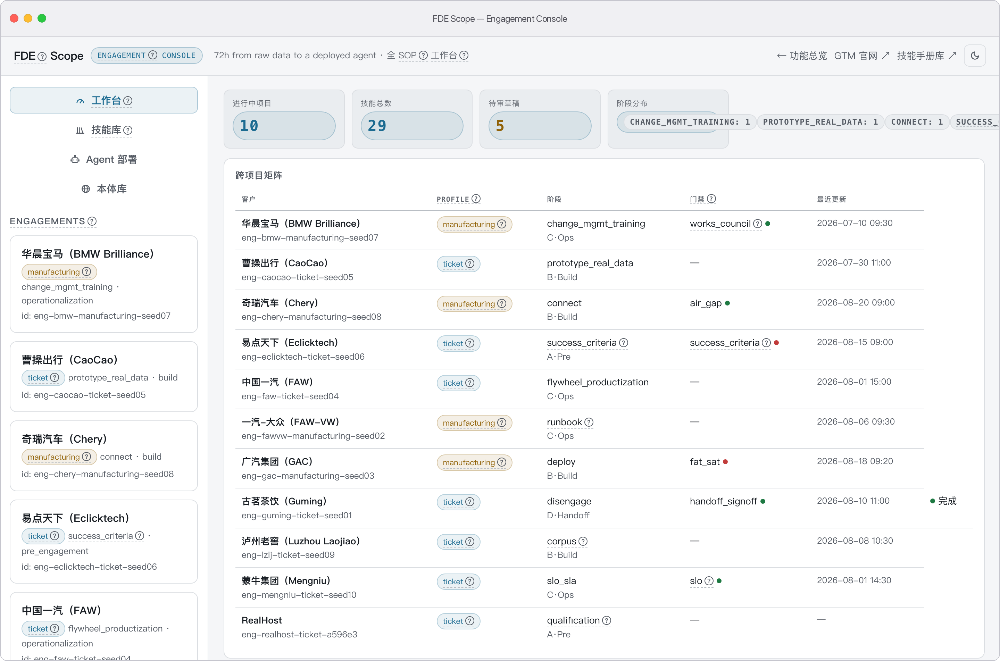
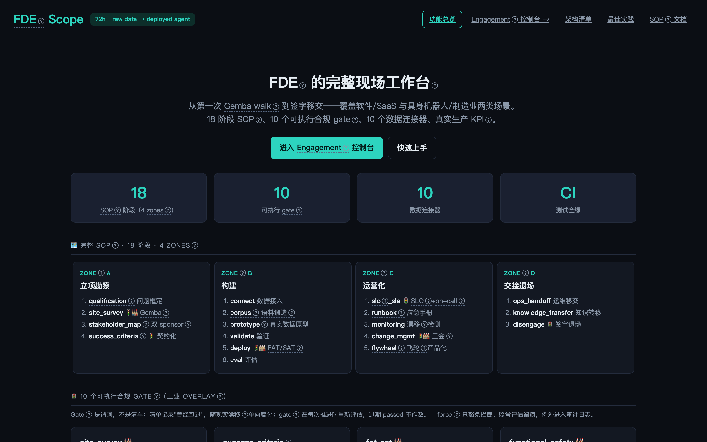

清单会遗漏，门禁不放行。
把完整 FDE 作业流程（4 区、18 阶段、10 个可执行门禁）固化为状态机：证据不齐，拒绝推进。软件与车间共用一台引擎。
缺少危害分析
门禁拦下的事故日志
真实事故，同步自公开复盘库 kuba-database。在清单上它们会溜过去；映射到看板上，每一条都是一道会拒绝放行的门禁。
携程 5·28 全站瘫痪（运维误删生产服务器执行代码，12 小时全业务中断）
阿里云香港可用区 C 大规模服务中断（冷机水路气阻+群控死锁，运营十余年最长大故障）
Clerk 数据库事件（供应商自动升级触发连接池同步回收，惊群效应致间歇性故障 4 天，诊断被监控采样率掩盖）
Clerk 全服务中断 45 分钟（单区域架构 + 过度信任 Cloud Run 冗余承诺，认证基础设施整体不可用）
Unity Runtime Fee 收费政策引爆开发者生态危机（按安装收费决策 + 傲慢沟通，CEO 下台、政策最终取消）
Facebook 全球中断（骨干网维护命令撤销全部 BGP 路由）
十个门禁，全部是可执行代码
不是清单条目。Gate.check(ctx) 返回通过/阻断/警告，advance 不干净就拒绝。其中七个只存在于工厂场景。
一份记录。填完那天最准，此后随现实漂移单向腐化，勾选框不会知道世界变了。
一个谓词。每次推进重新执行，过期通过一律不作数；强推也照常评估留痕，例外本身进审计。
一台引擎，两张工单
同一台状态机既跑客服台也跑机器人产线；场景配置切换连接器、KPI 与适用门禁。
Ticket（客服工单）
PROFILE（场景）· 客服- Phases（阶段）
- 18 阶段中的 15 个；3 个工业专属阶段自动不适用。
- Connectors（连接器）
- CSV · Zammad · Salesforce · MySQL
- Gates（门禁）
- success_criteria · slo · handoff_signoff
- Proof（度量证明）
- 解决率 / 满意度 / 分流率 / 坏例挖掘
Manufacturing（制造业）
PROFILE（场景）· 工厂- Phases（阶段）
- 全 18 阶段，含现场勘察、FAT/SAT（出厂/现场验收测试）部署与共决变更。
- Connectors（连接器）
- OPC UA · MQTT-Sparkplug · ROS2 · MES · Historian
- Gates（门禁）
- 全部 10 个门禁
- Proof（度量证明）
- OEE（设备综合效率）/ 平均故障间隔 / 良率 / 抓取成功率 / 碰撞率
一次部署，拉起一支 Agent 班组
点到的每个名字都是真实的 AgentScope 2.0 Agent——接线模型、角色工具包、经 AgentState 注入的权限规则。驻场工程师（FDE）自己点名拉起 Agent；未知角色退化为语料工具，缺数据源的工具在清单里如实标注 unbound（未绑定），绝不假装可用。
fde-scope deploy --tenant acme --agent 数据员:数据分析 --agent 日志员:日志分析:qwen3-14b --connector-source csv=sample.csvfde-scope web一块已经跑起来的看板
一条命令种入六个示例项目；以下每条门禁记录都由引擎自身生成，面板不会说谎。
真机界面 · macOS App 实拍
双击即用的 macOS App 实机截图：universal2 双架构、经 codesign 签名的 DMG（安装镜像）、单实例守护、优雅退出。CLI 背后那台引擎，装进了一个免 Python 的桌面图标。


零配置工具架
核心与 engagement（驻场项目）层零 AgentScope 依赖：无大模型密钥（LLM key）、无 Docker，五分钟全绿。
pip install -e ".[dev]"python examples/seed_mock_engagements.pyfde-scope webfde-scope ontology export fde-core交付清单 · 功能 / 架构 / 最佳实践
三本台账，今天即可验证——不是路线图：功能做什么、架构怎么分层、六条被契约测试钉住的工程不变式。
01Product
功能清单
- 18 阶段 SOP门禁是代码 Gate.check()，不是检查清单
- 2 套场景工业门禁：FAT/SAT · ISO 13849 · CE/EU-AI-Act · BetrVG §87 · 气隙 · 换班
- 10 个数据连接器OPC UA · MQTT-Sparkplug（paho-mqtt 真 broker IO）· MySQL 真实 · Zammad/Salesforce/MES/Historian 接口态 · Documents 延迟导入
- 语料锻造脱敏→质量门→覆盖度→缺口检测→补盲区合成
- 评估 + 工业 KPI（关键指标）OEE / MTBF（平均无故障时间）/ 抓取成功率 / 碰撞率
- 技能库AgentScope 与 QwenPaw 双格式导出
- 本体语义层fde-core + ISA-95 overlay（叠加层）· SKOS 概念体系驱动语料覆盖与技能检索 · ONTO-* 错误码校验
- 部署三支柱Agent 装配 · 权限上下文 · 沙箱工作区（workspace）
- 交接 + 飞轮无密钥时全走规则路径，失败自动回退
02Architecture
架构清单
- 核心层零顶层 agentscope 依赖：无 key、无 Docker 五分钟全绿
- deploy/三支柱运行时组装，可选依赖组（optional extra）
- connectors/documents.pyPDF/Word/Excel/PPT 解析按需延迟接入 agentscope.rag
- 横切层唯一大模型（LLM）出口 llm.py；本体 TBox/ABox/SKOS 原子落盘；data_root() 四级解析
- 4 个界面CLI · Web 控制台 32 路由 · PawApp 18 路由 · macOS DMG 双击即用
- 证据模型Structurizr DSL + DOT 为事实源，Mermaid 沉淀可读图
03Best practices
最佳实践 · 六条不变式
- 门禁实时重评每次 advance 重评门禁，过期 passed 不放行
- 服务端生成 ID外部输入永远不能指定记录 ID
- 密钥仅存环境变量密钥只走环境变量，绝不落 manifest/报告/日志
- 原子写入所有落盘记录经 fsutil.atomic_write_text
- 仅规则授权唯一权限通道；未匹配工具 DEFAULT→ASK · DONT_ASK→DENY
- 实测 AgentScope 窗口>=2.0.4.post1,<3 逐版本实测，契约测试钉住引用
验证来源：CI（持续集成）全绿套件 · 契约测试 tests/test_architecture_guard.py · 证据模型 docs/architecture-model/architecture-map.md · 完整功能清单与「功能 → 优点」速查表：docs/features.md（EN）